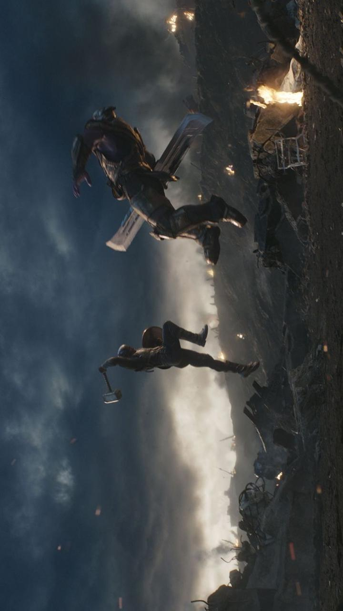
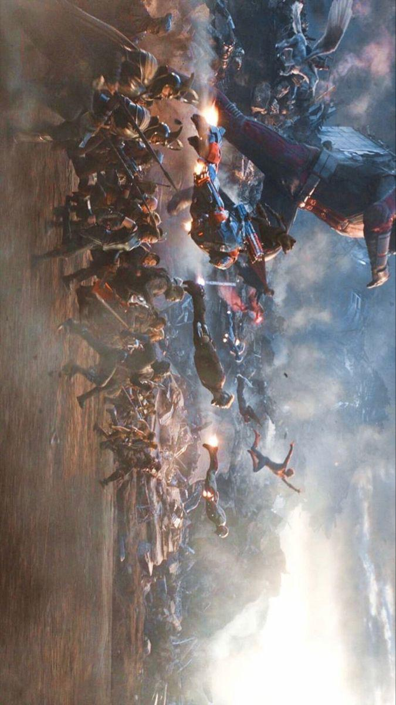
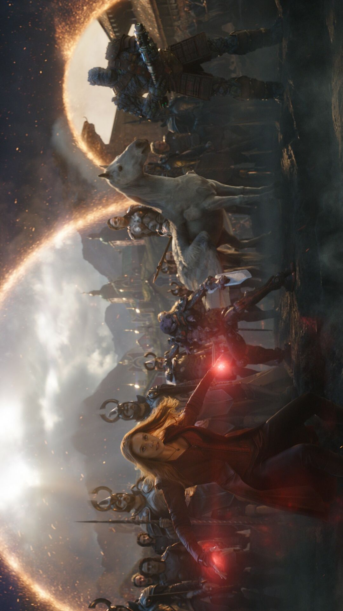
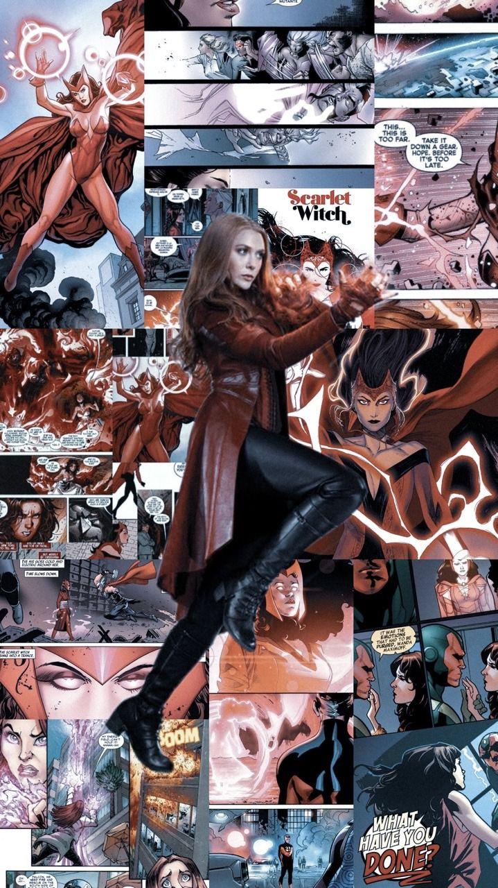
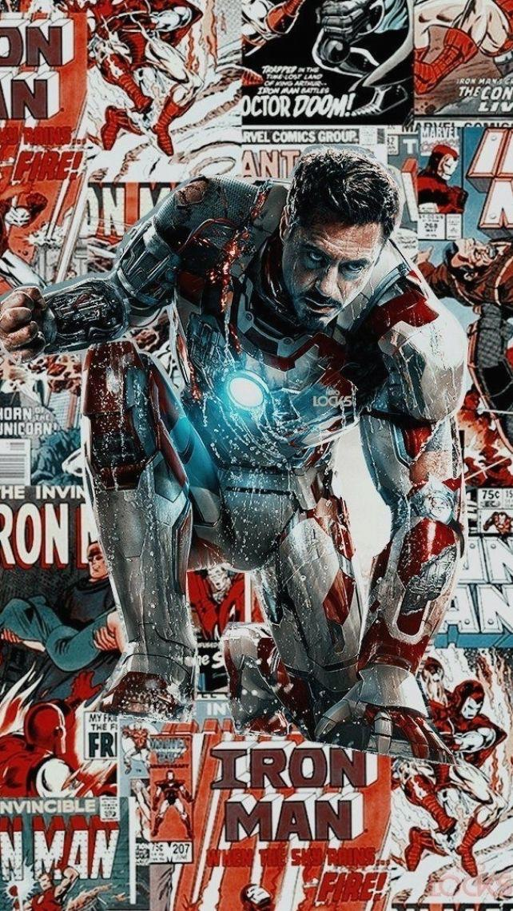
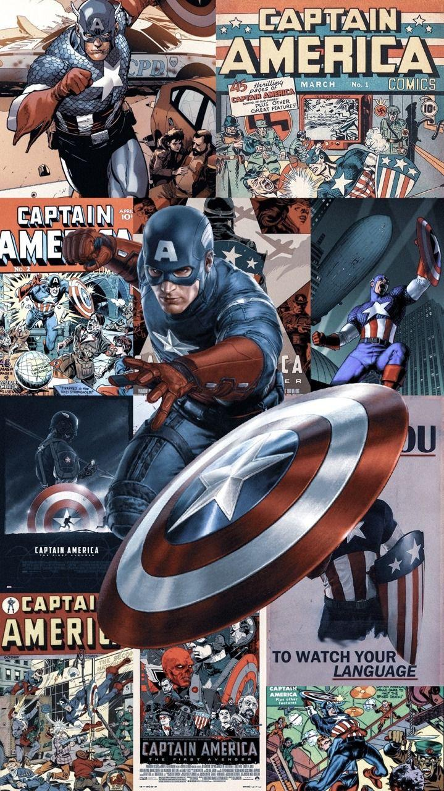
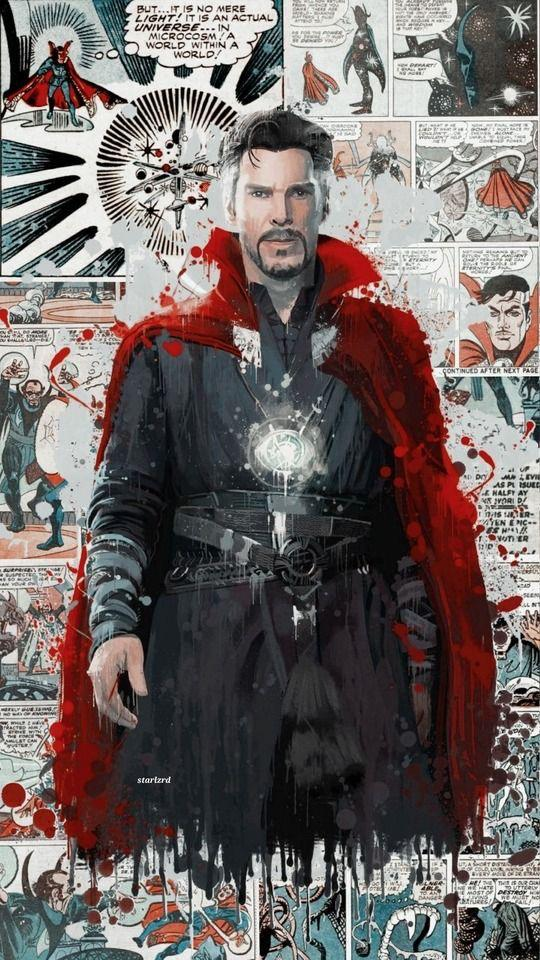

Aquí te mostramos un poco unos cuantos personajes de Marvel Studios y que conozcas un poco sobre ellos
Podrás ver en que pelicula tuvieron su primera aparición, que actores los interpretan y unos cuantos datos más



Wanda Maximoff

Apodo:
Bruja Escarlata
Apariciones:
La Era de Ultrón
Avengers: Civil War
Avengers: Infinity War
Avengers End Game
Interpretada por:
Elizabeth Olsen
Wanda Maximoff es una nativa de Sokovia, donde creció en compañía de su hermano gemelo, Pietro. En un esfuerzo por ayudar a librar a su país de los conflictos, los gemelos se sometieron a experimentos supervisados por el líder de HYDRA Wolfgang von Strucker, los cuales despertaron en Maximoff las habilidades mágicas con las que había nacido. Cuando HYDRA cayó, los gemelos se unieron al robot Ultrón para obtener venganza sobre Anthony Stark, pero finalmente cambiaron de bando y se unieron a los Vengadores cuando descubrieron las verdaderas intenciones de Ultrón. Aunque Pietro fue asesinado, Wanda sobrevivió y se quedó con los Vengadores.
Iron Man

Apodos:
Iron Man
Tony Stark
Sr. Stark
Apariciones:
Iron Man 1-3
Avengers
La Era de Ultrón
Avengers: Civil War
Avengers: Infinity War
Avengers End Game
Interpretada por:
Robert Downey Jr.
Tony Stark fue un multimillonario industrial, anterior Director General de Industrias Stark y miembro fundador de los Vengadores. Siendo el hijo de Howard Stark y poseyendo un gran intelecto, Stark se volvió un inventor de armas mundialmente reconocido hasta que fue secuestrado por los Diez Anillos. En su cautiverio, él diseñó un traje blindado para escapar de la organización, regresando a casa y convirtiéndose en el superhéroe conocido como Iron Man, luchando contra los terroristas y su ex compañero de negocios, Obadiah Stane. Stark gozó de la fama que le llegó con su nueva identidad secreta y decidió compartirla con el mundo, anunciando públicamente que él era Iron Man.
Capitán América

Apodo
Apariciones
Steve Rogers
Winter Soldier
Capitan America
Avengers Civil War
Interpretado por: Chris Evans
Steve Rogers es un veterano de la Segunda Guerra Mundial, miembro fundador de los Vengadores y el primer superhéroe del mundo. Rogers tenía problemas de salud, sin embargo, después de que el Proyecto Renacimiento lo convirtió en el Capitán América, ayudó a los Aliados a ganar la Segunda Guerra Mundial atacando las instalaciones de HYDRA junto a los Comandos Aulladores, convirtiéndose en una leyenda viviente debido a sus hazañas. Rogers mantuvo una relación con Margaret Carter, pero tras perder a su mejor amigo, James Barnes, en la captura de Arnim Zola, Rogers lo vengó derrotando al líder de HYDRA, Johann Schmidt, no obstante, él se estrelló en el Ártico, permaneciendo congelado durante siete décadas.
Dr Strange

Interpretado por: Benedict Cumberbatch
Apodos:
Stephen Strange
Dr. Strange
Apariciones:
Dr. Strange
Avengers: Infinity War
Avengers End Game
El Doctor Stephen Vincent Strange es un poderoso hechicero y miembro destacado de los Maestros de las Artes Místicas. Él era un neurocirujano exitoso y arrogante, hasta que un accidente automovilístico dañó gravemente sus manos, lo que le hizo iniciar un viaje que lo llevó a Kamar-Taj, donde al descubrir la magia y las dimensiones alternativas, fue entrenado por Ancestral y Karl Mordo. Aunque su enfoque era curar sus manos, Strange aprendió más acerca de las artes místicas, y ayudó a los Maestros a evitar que Kaecilius y los Fanáticos fusionaran la Tierra con la Dimensión Oscura de Dormammu, a costo de la muerte de Ancestral. Con la pérdida de su mentora, Strange se convirtió en el protector del Santuario de Nueva York y de la Tierra contra las amenazas interdimensionales.